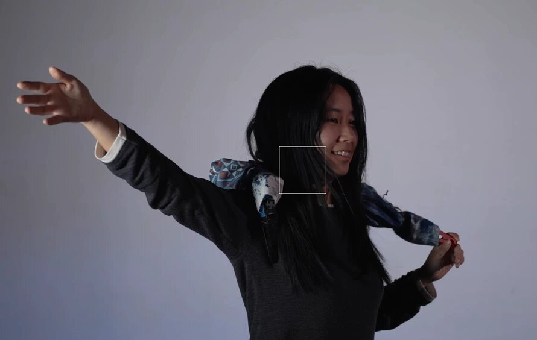

Tether
A wearable, 8-degree-of-freedom robotic mechanism that explores the symbiotic, tactile relationship between humans and embodied machines.
How can we reimagine our interaction with embodied robotic machines through the lens of wearables?
Designed to be worn around the neck, Tether is an interactive robotic wearable that merges hand-crafted natural materials (wood and fabric) with mechanical actuation. Operating like a responsive prosthetic, it wraps the user in choreographed patterns of contraction and extension, challenging our physical and emotional expectations of machine interaction.
Dimensions: 23.6 × 5.9 × 4.7 inches (extended, variable when contracted).
Demo Videos
Final demo.
First iteration.
This work was featured in a case-file interview by Artiact, a series spotlighting interactive art—the conversation below covers the ideas behind this interactive robotic wearable.